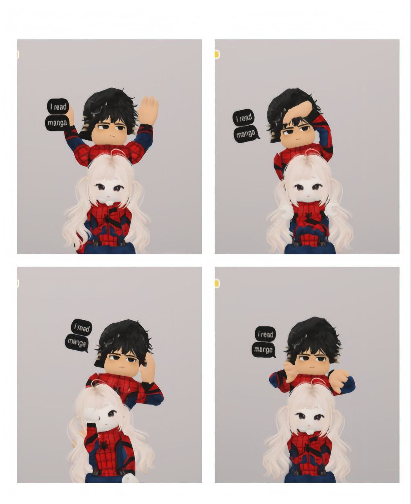

Momen-momen Indah Kita
Scroll untuk melihat ceritanya...

inget ga pas momen ini? ini tuh jadi momen fav aku..
makasii untukk semuanyaa.
kamuu adalah sahabat terbaik akuu.
▶️ pencet disini
Browser Anda tidak mendukung audio.
▶️ coba Putar Lagu nya